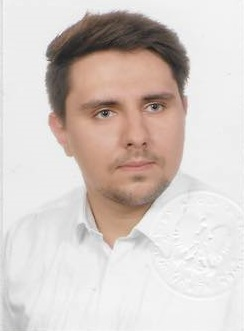

NICHOLAS SAWA
ELECTRONIC TECHNICIAN

PROFILE
I am an enthusiastic, fast learning recent graduate and certified technician with excellent
customer service skills
and organisational management skills. I am experienced in working
in fast-paced environments, have a keen eye for detail
and I am passionate about tinkering
with and fixing consumer electronics
WORK EXPERIENCE
Assistant manager and Technician
MDX Services, Lublin, Poland - 04.2019-10.2023
- Staff training.
- Resolving workplace issues.
- Stock review and placing orders.
- Managing shifts and sick cover.
- Key cutting, key fobs repair and replacements, watch repair service.
- Providing auto locksmith services.
Assistant Technician
Drosed S.A., Miedzyrzec Podlaski, Poland - 07.2018-07.2018
- Assisting with disassembly and reassembly of a production line.
Grocery Picker
Makro Supermarket, Lublin, Poland - 20.07.2017-20.10.2018
- Collecting products ordered by customers.
- Ensuring all pallets are picked correctly with the correct quantities and products.
- Continuous replenishment of all packaging areas.
- Making sure orders are fulfilled correctly and on time.
- Coordinating team on fulfilling the order.
EDUCATION
MA Media Production (Games Development)
Maria Curie-Sklodowska University - 10.2021-06.2023
- Courses included: Game Design Theory, Project Management and Marketing Strategies.
- I used C# to design a game in Unity as one of my course assignments.
- I created a stop-motion animation and recorded and edited voice over parts.
BA Multimedia Production
Maria Curie-Sklodowska University - 10.2018-06.2021
- Degree focused on areas including content production, editing, research and post-production.
I gained an understanding of how social media, mobile platforms, e-commerce and locational
software are driving change and will develop ideas for interactive applications.
- Attended a course focused on using Blender software for 3D object design.
- In another course I used Adobe Premier, and learned the basic video editing.
Technician of Electronical Science
Vocational Technical High School for Electronial Science - 09.2014-06.2018
- I acquired skills related to the operation of digital Terrestrial and satellite television systems.
- I have got to know access control systems and learned to install and program intercoms,
electronic locks among other things.
- I learned how to install computer networks.
- I am proficient at computer maintenance, and can solder both SMD and THT
SKILLS
- MS Office
- C# beginner
- 3D Blender
- Adobe Premier
- Invoicing Software (Elisoft)
- Detail Oriented
- Ability to Multitask
- Great Communication Skills
- Full and clean driver license cat. A and B
- HTML
INTERESTS
In my spare time I like to buy faulty electronic devices such as an Xbox or headphones and repair them.
I also enjoy fixing my car. I have managed to replace break rotors, break pads, thermostat, starter, part
of suspension and a battery.
I’m also interested in 3D modelling with the use of pepakura.
LANGUAGES
Polish: Native English: Proficient
Contact Me